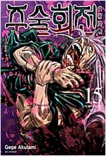
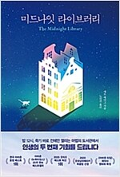
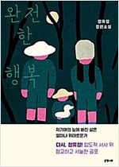
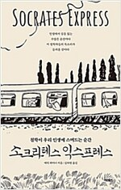
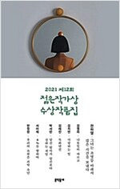

조국 (지은이) | 한길사 | 2021년 5월
2019년 8월 9일, 조국이 법무부장관 후보로 지명된 이후 벌어진 일련의 사태를 정리하고 자신의 솔직한 심정을 기록했다. 진보적 지식인으로서 꿈꿔왔던 검찰개혁을 공직자로서 실현하는 과정에서 겪은 고난의 시간을 가감 없이 담아냈다.

아쿠타미 게게 (지은이), 이정운 (옮긴이) | 서울미디어코믹스(서울문화사) | 2021년 5월
스쿠나의 대량 살인, 나나미 켄토의 죽음. 그리고 마히토의 손에 의해, 쿠기사키마저! 자신의 죄의 무게로 인해 이타도리의 마음이 한계를 넘어선 그때, 친한 친구의 위기 상황에 그 남자가 달려 온다.

매트 헤이그 (지은이), 노진선 (옮긴이) | 인플루엔셜(주) | 2021년 4월
다정한 사서의 안내를 받은 노라는 서가에 꽂힌 책이 모두 자신이 살고 싶었던, 혹은 살았을지도 모르는 삶들을 담고 있다는 것을 알게 된다.
박병창 (지은이) | 포레스트북스 | 2021년 5월
동가홍상(同價紅裳), 같은 값이면 다홍치마라는 말을 '같은 다홍치마라도 싸게'로 바꿔 볼 차례다. 이왕이면 좋은 주식을 사야 하는 것만큼, 그 주식을 이왕이면 싸게 사는 것도 중요하다. 이 때 필요한 것이 매매의 기술이다.

정유정 (지은이) | 은행나무 | 2021년 6월
속도감 있는 문장, 치밀하고 정교하게 쌓아올린 플롯과 독자의 눈에 작열하는 생생한 묘사로 정유정만의 스타일을 가감 없이 보여주는 한편, 더 완숙해진 서스펜스와 인간의 심연에 대한 밀도 높은 질문으로 가득 찬 수작이다.

에릭 와이너 (지은이), 김하현 (옮긴이) | 어크로스 | 2021년 4월
프랑스 사상가 모리스 리즐링은 말한다. “결국 인생은 우리 모두를 철학자로 만든다.” 하지만 인생이 호락호락하지 않음을 우리는 수시로 깨닫는다.

전하영, 김멜라, 김지연, 김혜진, 박서련, 서이제, 한정현 (지은이) | 문학동네 | 2021년 4월
젊은작가상이 2021년의 봄을 알린다. 수상자로 호명된 작가는 전하영, 김멜라, 김지연, 김혜진, 박서련, 서이제, 한정현. 모두가 젊은작가상을 통해서는 처음 소개되는 작가들이다.